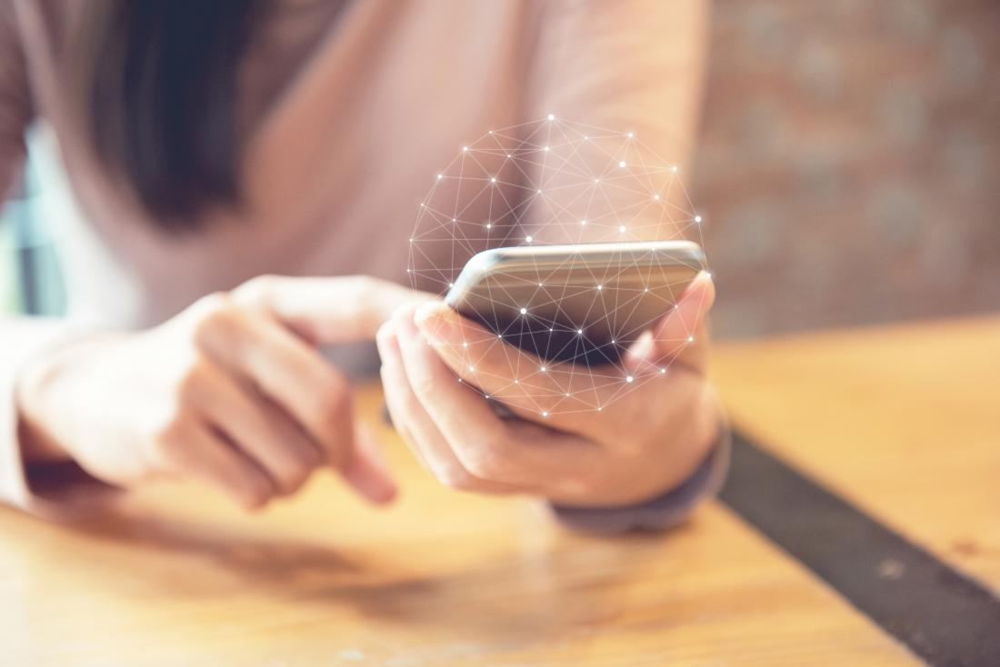
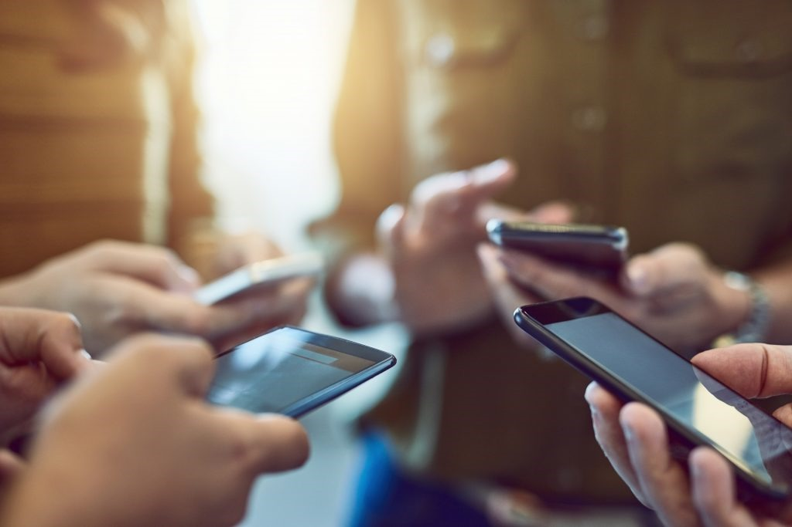

Phone: advantages and disadvantages
Advantages Of Mobile Phones
- Communication: mobile phones are the most popular way of contact with friends, relatives, colleagues, and more. It is the best invention in terms of technology. It is the best way to socialize over a social network. One can chat over emails, messages, video calls, and over phone calls. Socializing and even working on the phone is possible using various apps.
- Portable and compact gear: using a mobile phone is simple, and as it is close, you can keep it anywhere and carry it everywhere with you. Carry it in your school bag, in your pocket, while traveling, everywhere you go. It always is available with a charger, and you can charge it if the battery gets low. You can charge it in any electrical plug point, even in your bike, scooter, and car.
- Entertainment: if you are bored, the mobile phone is the best way to keep yourself engaged. Get an internet pack and enjoy watching movies, playing games, and listening to music online. Listening to radio podcasts is also possible via phone. Watching your favorite web series on Amazon Prime and Netflix is possible using your mobile phone.
- Online classes and work from home: Today, educational centers conduct online classes for students in this pandemic. Not all have a computer or a laptop at home. Thus a mobile phone helps children do online courses. People are working from home after COVID 19. Therefore it is helpful for everyone in their different ways.
- Video calls, text messages, and calls: with the help of a mobile phone doing video calls, messaging friends, and making a call has become very convenient. Talk to anyone sitting in any corner of the world with your mobile phone. Whos who are far from their homes and are missing their family members can make video calls and feel at home. Texting allows the users to send messages to clients, family, colleagues within a fraction of a second. Calls, messages, and video calls are ways to stay connected with the outer world using your mobile phones.
- Shopping: today, with the changing times, it is not safe to go out shopping. But, you need not worry as with a mobile phone and internet connection everything is possible sitting at home. Shop for clothing, footwear, accessories, grocery, everything online using your mobile phone.
- Booking tickets, giving exams, filling forms: now, you don't have to stand at the ticket counter to book a flight or a train ticket. Sit back at home and book your ticket using your cellphone. People can give online exams using a mobile phone. All those who want to take admissions in a school, college, or university can fill forms online and make their lives easier.

<<<<<<< Updated upstream
=======
Disadvantages Of Mobile Phones
- Eyesight issues: one of the biggest problems of using a phone regularly is blurriness or bad eyesight. Today adults and children both cannot stay without their mobile phones. If they don’t use their phones for a few hours, they feel as if something is missing. Yes, it is true, significant usage of mobile phones worsens your eyesight. Watery eyes, eye pain, headache, eye strain, redness all are the causes of mobile use. Mobile phones send blue light and rays that cause redness and blurriness. Studies show that the blue light coming out from the phone causes macular degeneration.
- Isolation: People engrossed in using their mobile phones are not very social in their personal lives. They tend to like their own company and also like staying alone. They keep themselves engaged in their phone and do not spend time with family and friends. They love to remain in isolation.
- Mind is constantly distracted: when you are doing work, and your phone does not ring for an hour, the mind keeps getting distracted. The mind is not stable when the mobile phone is near and when it is far from you on a charge or switched off. If your phone is switched on in a public gathering and you keep getting calls, the mind also gets distracted. When you are in a meeting, and your phone is silent or in vibration mode, you also feel distracted and cannot concentrate on a meeting.
- Low battery: it is one of the significant disadvantages of a mobile phone. You need to keep your phone charged so that you can use it as per your requirement. You need to keep the charger near you to charge your phone. Every new model you buy, after a certain time, the battery keeps getting discharged more often.
- Work is never over even if you have taken a leave: when you are on leave, and your mobile phone is on, there are 100% chances that your boss or manager will call you for some work or the other. This is also one constant distraction that you will face when you are on leave. The workday does not end ever as reaching you is easy due to the availability of cell phones.
- People misuse the phone for taking pictures and videos: with the mobile phone, you never know who is recording your unofficial video or an image. People do this to blackmail other people and also sometimes just for mischief. Recorded videos and pictures can prove to be dangerous as they can be used in porn videos. People use it on social sites, people can make fake accounts, and all this has been possible due to the availability of mobile phones with everyone today.

>>>>>>> Stashed changes